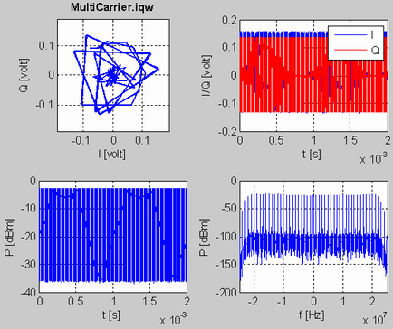

Post-Processing with MATLAB®
The following MATLAB® routines post-process the result of an I/Q recorder measurement.
% *************************************************************************
% [IQ, Message] = ReadIqw(FileName)
%
% SPECIFICATION:
% Converts the selected *.iqw file into a matlab IQ vector.
%
% INPUT:
% FileName: String containing the name of the file to be converted.
%
% OUTPUT:
% IQ: Resulting complex matlab vector
% Message: Returns a system dependent error message if the open is not
% successful
%
% EXAMPLE:
% [IQ, Message] = ReadIqw('MultiCarrier.iqw')
% *************************************************************************
%
%
function [IQ, Message]=ReadIqw(FileName)
[fid, Message] =fopen(FileName);
if fid == -1
IQ = nan;
else
x = fread(fid,'single');
IQ = x(1:2:end)+1i*x(2:2:end);
fclose(fid);
end% *************************************************************************
% [Info] = ReadInfo(FileName)
%
% SPECIFICATION:
% Converts the selected *.info file into a matlab structure.
%
% INPUT:
% FileName: String containing the name of the file to be converted.
%
% OUTPUT:
% Info: Resulting Matlab structure
%
% EXAMPLE:
% [Info] = ReadInfo('MultiCarrier.info')
% *************************************************************************
%
%
function [Info] = ReadInfo(FileName)
[fid] = fopen(FileName);
if fid == -1
Info = '';
else
tline = fgetl(fid);
i = 1;
while ischar(tline)
VarName{i} = tline(1:findstr('=',tline)-1);
VarValue{i} = tline(findstr('=',tline)+1:end);
tline = fgetl(fid);
i = i+1;
end
Info = cell2struct(VarValue, VarName, 2);
fclose(fid);
end% *************************************************************************
% [IQ, Info] = ReadIqRecord(FileName, PlotData)
%
% SPECIFICATION:
% Reads *.iqw and *.info and plots the IQ data.
% Need the functions ReadIqw and ReadInfo.
%
% INPUT:
% FileName: String containing the filename without extension.
% PlotData: If 1, then IQ data is plotted
%
% OUTPUT:
% IQ: Resulting complex matlab vector
% Info: Resulting Matlab structure
%
% EXAMPLE:
% [IQ, Info] = ReadIqRecord('MultiCarrier', 1)
% *************************************************************************
%
%
function [IQ, Info] = ReadIqRecord(FileName, PlotData)
if nargin < 2
PlotData = 0;
end
[pathstr, name, ext, versn] = fileparts(FileName);
[IQ, Message] = ReadIqw([name, '.iqw']);
if isnan(IQ)
error(Message)
end
Info = ReadInfo([name, '.info']);
if isempty(Info)
t = 0:length(IQ)-1;
TimeLabel = 'samples';
f = -0.5:1/length(IQ):0.5-1/length(IQ);
FreqLabel = 'f/f_s_a_m_p_l_e';
else
t = (0:length(IQ)-1)/str2double(Info.SampleRate);
TimeLabel = 't [s]';
f = (-0.5:1/length(IQ):0.5-1/length(IQ))*str2double(Info.SampleRate);
FreqLabel = 'f [Hz]';
end
if PlotData
Impedance = 50;
subplot(2,2,1); plot(IQ); axis square; grid on;
Scale = 1.1 * max(max(abs(real(IQ))), max(abs(imag(IQ))));
set(gca, 'XLim', 1.1*[-Scale, Scale], 'YLim', 1.1*[-Scale, Scale]);
xlabel('I [volt]'); ylabel('Q [volt]');
title([name, '.iqw'], 'FontWeight', 'Bold');
subplot(2,2,2); plot(t, real(IQ),'b'); hold on; plot(t, imag(IQ),'r');
set(gca, 'XLim', [min(t) max(t)]); grid on;
xlabel(TimeLabel); ylabel('I/Q [volt]');
legend('I', 'Q'); hold off;
subplot(2,2,3); plot(t,30+10*log10(abs(IQ).^2/Impedance));
set(gca, 'XLim', [min(t) max(t)]); grid on;
xlabel(TimeLabel); ylabel('P [dBm]');
w = gausswin(length(IQ), 3.8);
Gain = 20*log10(abs(sum(w)/length(w)));
subplot(2,2,4);
plot(f,-Gain+30+10*log10(abs(fftshift...
(fft(IQ.*w/length(IQ))).^2/Impedance)));
set(gca, 'XLim', [min(f) max(f)]); grid on;
xlabel(FreqLabel); ylabel('P [dBm]');
end
endResulting plot:
